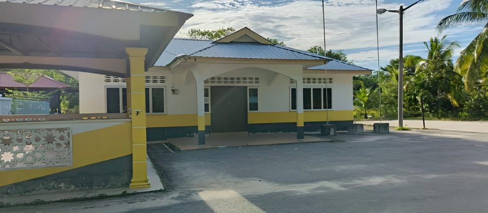
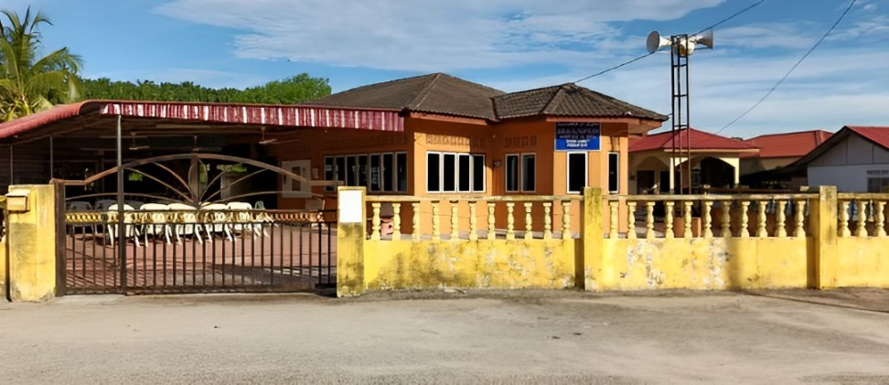

~ FACILITY ~
♦ DEWAN
The hall in Kampung Tanjung Batu is designed to be versatile and suitable for various activities and events. It serves as a gathering place for weddings, joint work activities, and many other community events.

♦ PROJECT RUMAH RAKYAT
This rakyat house project was developed to ensure that house prices are affordable. The State Government is committed to continuing to study and improve the Perak State Housing Policy. This policy ensures that every housing scheme development exceeding 20 acres will provide houses at a price as low as RM90,000 per unit, with a certain percentage for each housing category.

♦SURAU
Surau Al Taufikiah Kampung Tanjung Batu functions as a joint worship space, religious education, and community gathering and fosters a spiritual atmosphere for the congregation. Its layout and features are carefully designed to support the various religious and social activities that take place within.